AI & Machine Learning Resume
AI • ML • Deep LearningMachine Learning Engineering, Deep Learning, NLP, Computer Vision, Generative AI, Predictive Analytics.
I specialize in applying artificial intelligence, machine learning, and advanced analytics to solve complex business and operational challenges. My work combines biotechnology manufacturing experience, graduate-level data science training, and doctoral research in AI to build scalable systems that improve decision-making, forecasting, efficiency, and organizational outcomes.
📍 Philadelphia, Pennsylvania
Download the resume version that best aligns with your hiring needs.
Machine Learning Engineering, Deep Learning, NLP, Computer Vision, Generative AI, Predictive Analytics.
Biopharmaceutical Manufacturing, GMP Operations, Healthcare Analytics, Process Optimization.
Professional profile highlighting AI, Data Science, Analytics, Leadership, and Business Strategy.
A curated set of work across ML, analytics, and ethical AI. Click through for repos and full readme case studies.
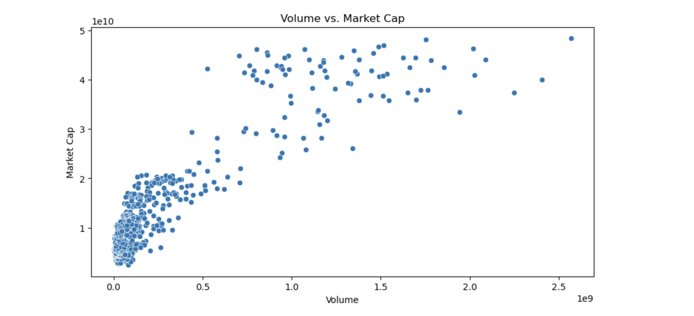
Volatility analysis with distribution fits, volume–cap correlations, and daily price-change insights.
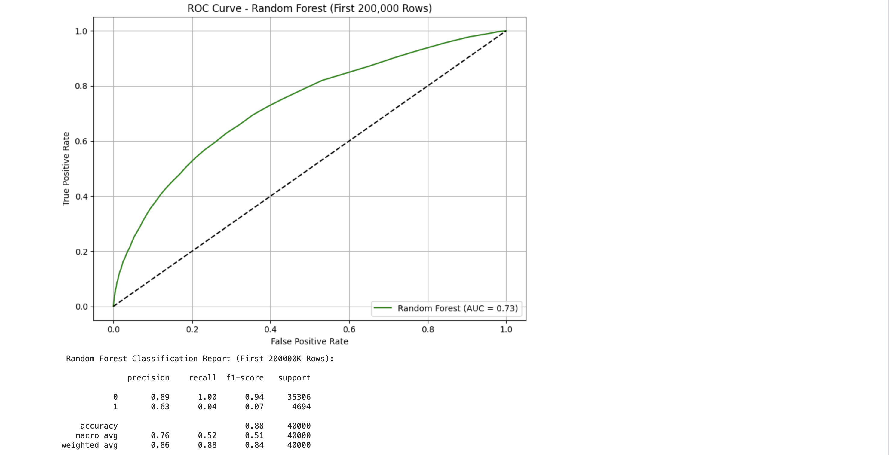
Logistic Regression & Random Forest with SHAP interpretability and a Streamlit prediction UI.
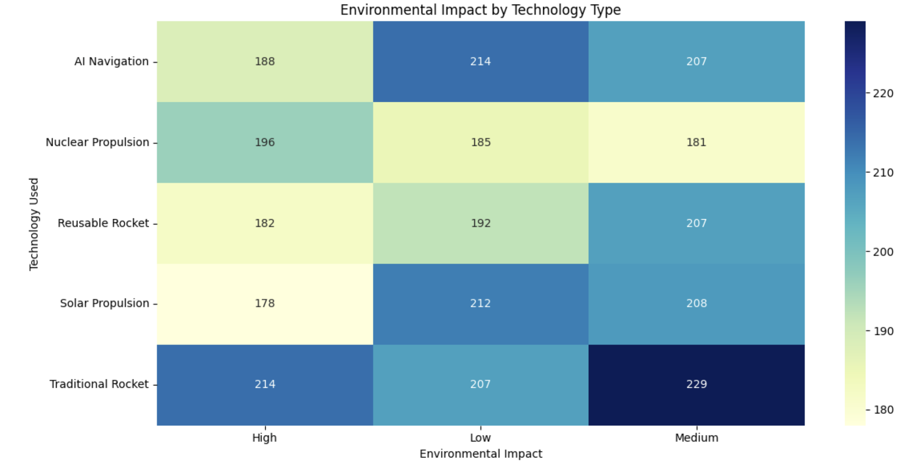
Global exploration trends, budgets, success rates, and Mars readiness comparisons by country.
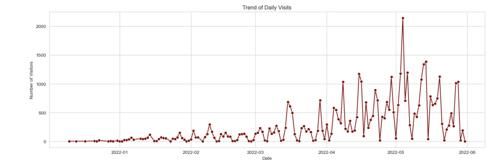
White House access analysis revealing visitor traffic patterns, peak periods, and facility utilization trends.
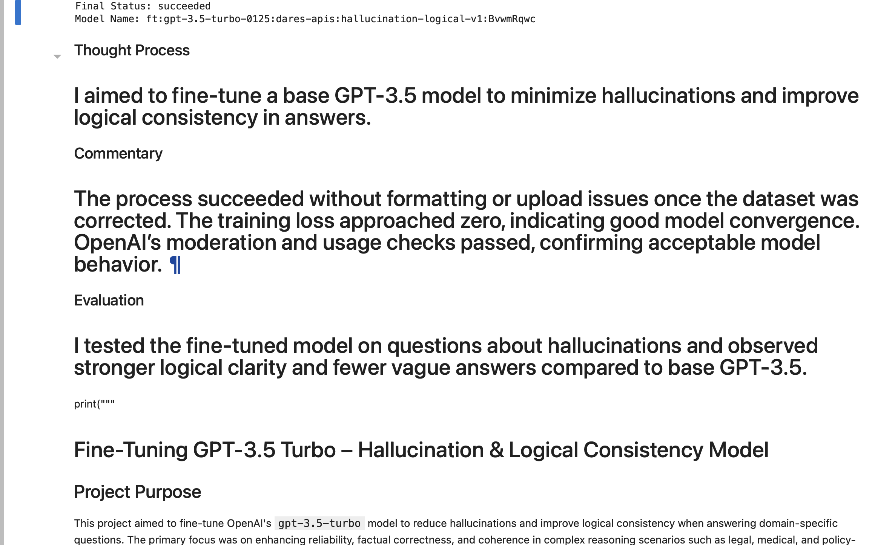
Fine-tuned GPT assistant detecting and correcting AI hallucinations with confidence scoring.
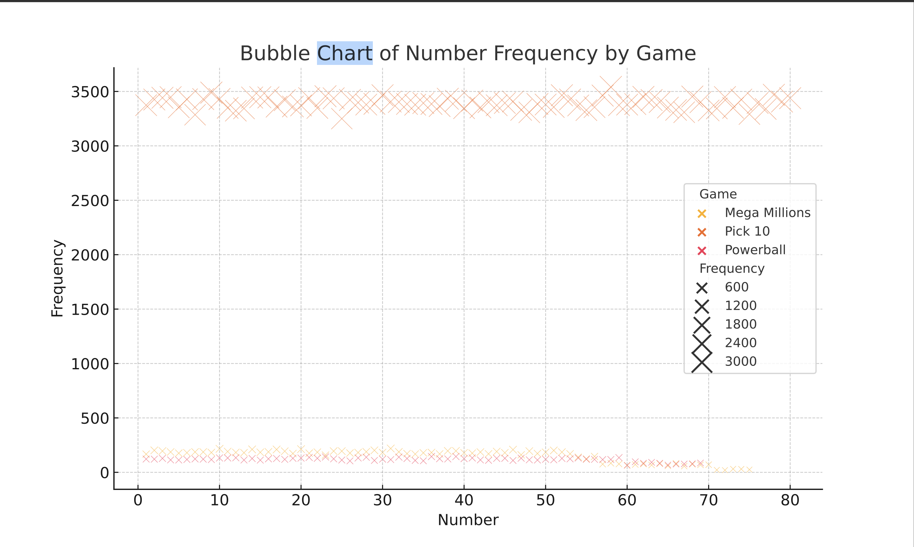
Frequency and randomness study of Powerball, Mega Millions, and Pick 10 drawing patterns.
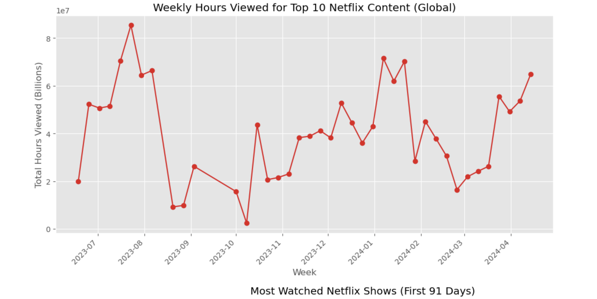
Top 10 engagement patterns, first-91-days effect, and runtime trends across formats.
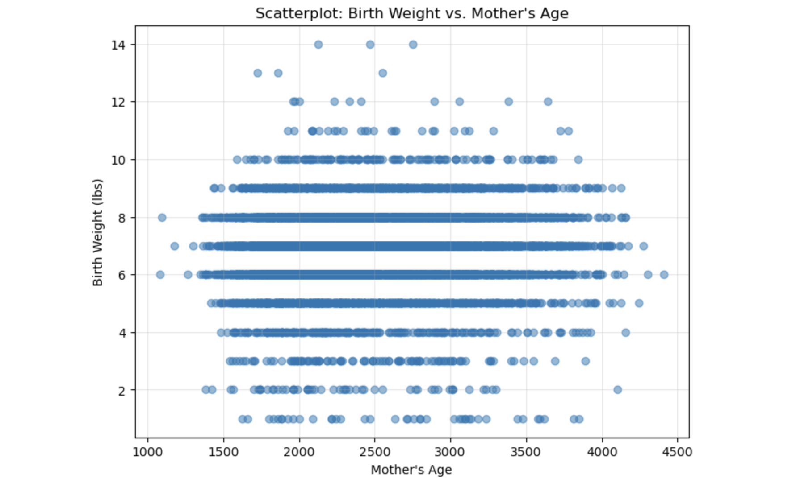
NSFG-based maternal age, birth weight, and statistical inference analysis.
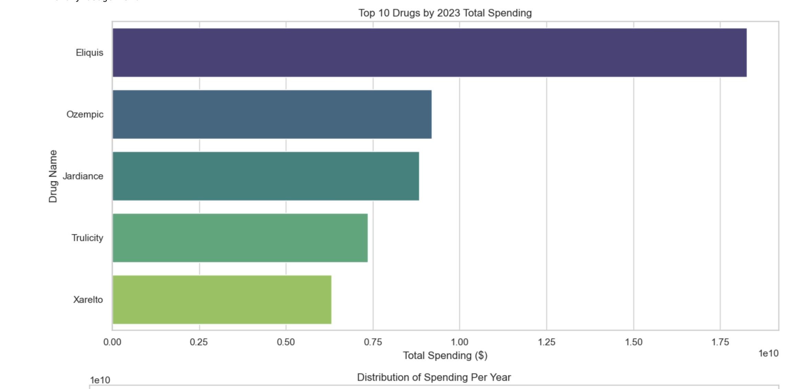
Prescription drug spending analysis with trend modeling and healthcare cost insights.
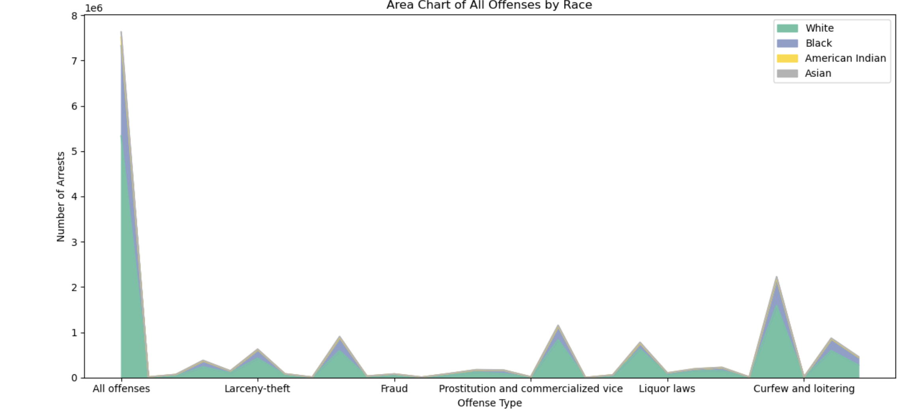
Arrest data analysis, disparity assessment, and offense-level visualization.
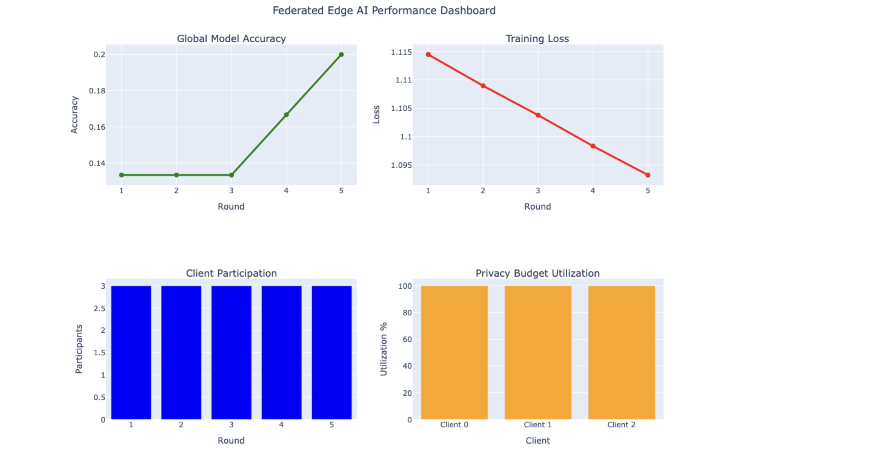
Healthcare AI using federated learning, differential privacy, LoRA fine-tuning, and edge computing.
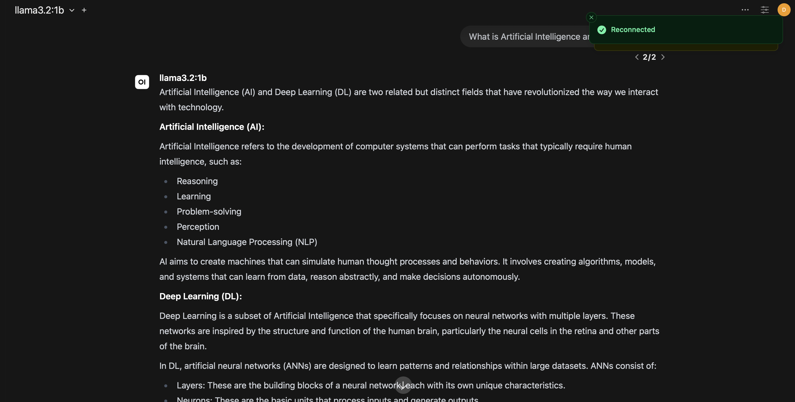
Retrieval-augmented generation with web scraping, embeddings, and semantic search.
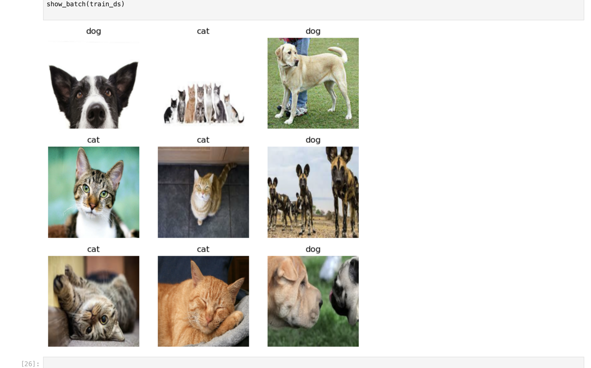
Deep learning image classification using convolutional neural networks.
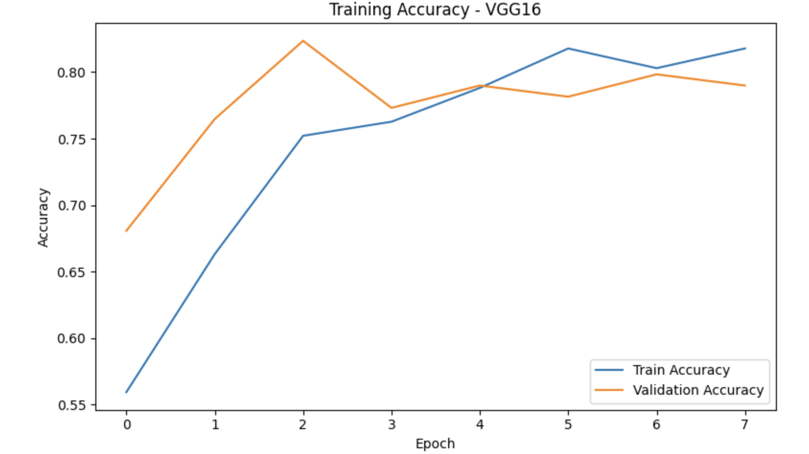
Benchmarked Simple CNN, VGG16, and ResNet50 architectures for binary pet image classification using accuracy, loss curves, confusion matrices, and t-SNE feature visualization.
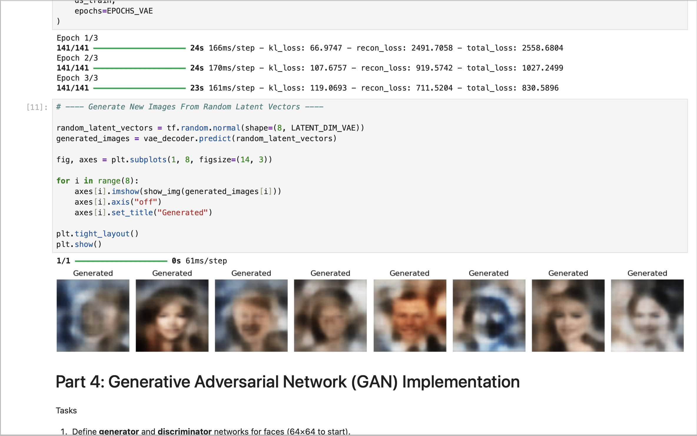
Autoencoders, latent representations, and generative modeling techniques.
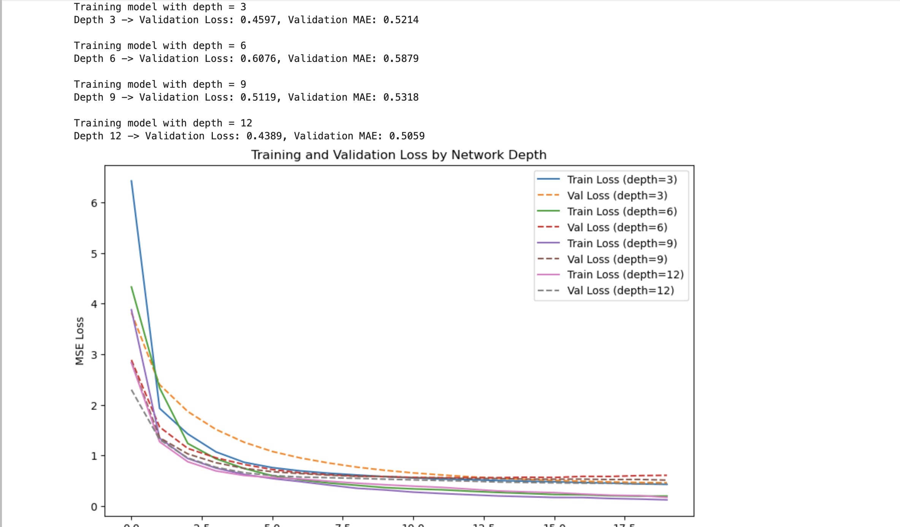
Advanced optimization techniques and neural network experimentation.
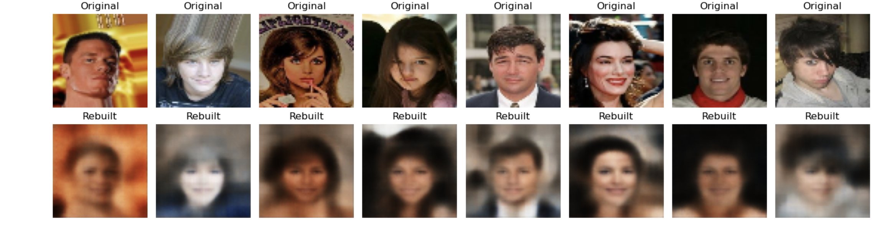
Autoencoder reconstruction, latent space learning, and deep generative architectures.
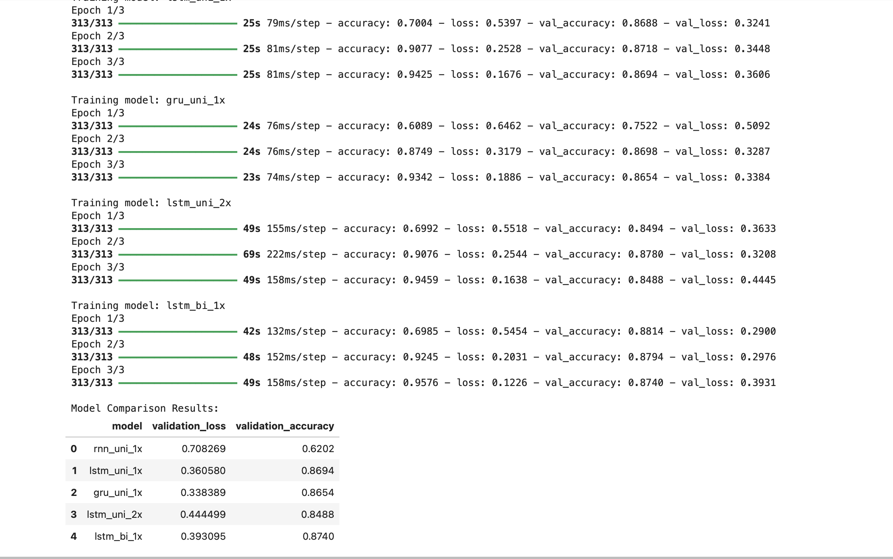
Sequence modeling using recurrent neural networks and LSTMs.
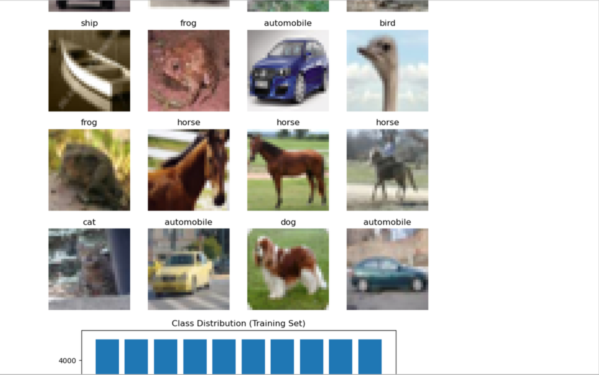
Image classification using pretrained CNN architectures and transfer learning.
I'm Darious Brown, an Artificial Intelligence and Machine Learning professional with a Master of Data Science and doctoral-level studies in Artificial Intelligence, Machine Learning, and Business Administration. My background combines advanced analytics, machine learning engineering, biotechnology manufacturing, and operational strategy.
I currently work within GMP-regulated cell therapy manufacturing environments where I support highly controlled biopharmaceutical operations while developing data-driven solutions focused on process optimization, forecasting, operational intelligence, and decision support. My experience bridges technical execution, business strategy, and applied artificial intelligence.
Throughout my career and doctoral research, I have developed machine learning models, deep learning applications, computer vision systems, natural language processing solutions, predictive analytics platforms, and interactive AI-powered dashboards. My work emphasizes practical AI implementations that improve efficiency, reduce risk, uncover insights, and support measurable business outcomes.
My long-term focus is advancing artificial intelligence across healthcare, biotechnology, finance, and enterprise operations through scalable, production-ready solutions that create meaningful organizational impact.
Open to research collaborations, ML roles, and creative AI projects.